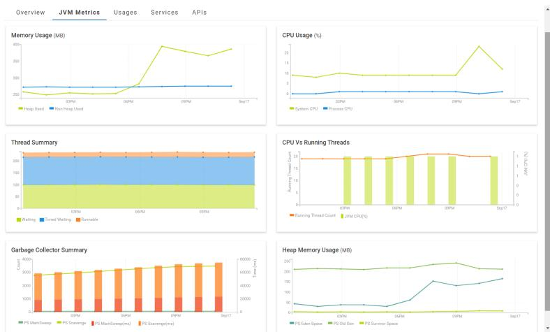

JVM Metrics
The Java Virtual Machine (JVM) Metrics tab allows you to view the heap memory, thread summary and garbage collection details of the JVM in which the Integration Server runs. Additionally, you can also view the operating system resource information such as CPU and Memory usage in time series.
JVM metrics are displayed using the following graphs:
 Memory Usage
Memory UsageHeap Memory (Used): Shows the amount of memory (in Megabytes) used in the heap.
Non-Heap Memory: The non-heap memory is where the JVM stores class-level information such as the fields and methods of a class, method code, runtime constant pool and internalized strings. This shows the amount of non-heap memory (in Megabytes) used by the JVM.
CPU Usage System CPU: CPU usage of the whole system. This metric is displayed as a percentage value. A value of 0% means that all CPUs were idle, and a value of 100% means that all CPUs were running during the observation interval.
Process CPU: CPU usage of the JVM process. This metric is displayed as a percentage value. A value of 0% means that all CPUs were idle , and a value of 100% means that all CPUs were running during the observation interval.
Thread Summary Shows the number of threads in any of the states defined in the class: java.lang.Thread.State.
Waiting: The number of threads that are waiting indefinitely for another thread to perform a particular action.
Timed Waiting: The number of threads that are waiting for another thread to perform an action for up to a specified waiting duration.
Runnable: The number of threads that are executing in the JVM.
CPU Vs Running Threads Running Thread Count: The total number of threads executing (in runnable status) in the Java Virtual Machine.
JVM CPU(%): CPU usage of the JVM process.
Garbage Collector Summary Note:
Garbage Collectors (GC) are JVM specific and could vary from the ones described below. PS MarkSweep and PS Scavenge, which are the default GC implementations for most platforms (the two most common ones), are explained below.
PS MarkSweep: The total number of garbage collections completed by the PS MarkSweep garbage collector on the "Old Generation" memory.
PS Scavenge: The total number of garbage collections completed by the PS Scavenge garbage collector on the Eden and Survivor components of the "Young Generation" memory.
PS MarkSweep (ms): The time taken in milliseconds by the PS MarkSweep garbage collector to free up memory from the "Old Generation" memory.
PS Scavenge (ms): The time taken in milliseconds by the PS Scavenge garbage collector to free up memory from the Eden and Survivor components of the "Young Generation" memory.
Heap Memory Usage Note:
Memory pools in the heap memory are JVM specific and could vary from the ones described below. Memory pools that are commonly used are explained below.
PS Eden Space: The amount of memory (in Megabytes) used in the Eden component of the "Young Generation" memory.
PS Survivor Space: The amount of memory (in Megabytes) used in the Survivor component of the "Young Generation" memory.
PS Old Gen: The amount of memory (in Megabytes) used in the "Old Generation" memory.